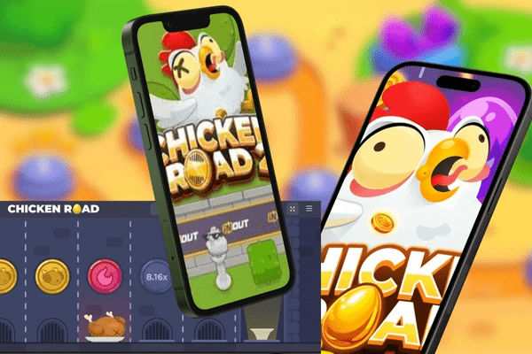

Iniziare a giocare al chicken road online è facile, sia in modalità demo che con denaro reale. Ecco una guida passo-passo per immergerti nel chicken road gambling game.
Chicken Road: Scopri l’Emozione
Chicken Road è uno dei giochi d’azzardo online più entusiasmanti del momento, un’avventura arcade che sta conquistando i giocatori italiani con il suo gameplay semplice ma avvincente. Sviluppato da InOut Games, il chicken road game combina strategia, rischio e ricompense, offrendo un’esperienza unica nel panorama del chicken road gambling game.
Play Chicken Road ️
Introduzione al Chicken Road Game
Il chicken road game è un mini-gioco di casinò che mette alla prova il tuo coraggio e la tua strategia. L’obiettivo è semplice: guidare un simpatico pollo attraverso un percorso pieno di insidie, evitando trappole infuocate per accumulare moltiplicatori e vincite. La chicken road original si distingue per il suo design accattivante e per la possibilità di personalizzare il livello di rischio, rendendo ogni partita unica. Grazie alla tecnologia HTML5, il chicken road online è accessibile su qualsiasi dispositivo, senza bisogno di download.
-
Welcome Bonus100% up to 150€ + 100 Free Spins
100% up to 150€ + 100 Free Spins for new players.
-
Welcome Bonus100% up to 100€ + 50 Free Spins
100% up to 100€ + 50 Free Spins for new players.
-
 Welcome Bonus100% up to 100€ + 100 Free Spins
Welcome Bonus100% up to 100€ + 100 Free Spins100% up to 100€ + 100 Free Spins for new players.
-
 Welcome Bonus100% up to 150€ + 250 Free Spins
Welcome Bonus100% up to 150€ + 250 Free Spins100% up to 250€ + 250 Free Spins for new players.
In questo articolo, analizzeremo le caratteristiche principali del chicken road gambling game, i passaggi per iniziare a giocare, le strategie per vincere e molto altro. Includeremo anche una tabella informativa e una sezione FAQ per rispondere a tutte le tue domande sul chicken road italia.
Perché Scegliere Chicken Road Italia
Il chicken road italia è diventato rapidamente uno dei giochi più popolari nei casinò online italiani, grazie alla sua semplicità e al potenziale di vincita. Ecco perché il chicken road game è una scelta eccellente per i giocatori.
Gameplay Intuitivo e Coinvolgente
Il chicken road play si basa su un concetto semplice: guida il pollo attraverso un percorso evitando le fiamme. Ogni passo sicuro aumenta il moltiplicatore della tua scommessa, ma un passo falso può farti perdere tutto. Questa dinamica rende il chicken road gambling game emozionante e adatto a chi ama il brivido del rischio.
Accessibilità e Compatibilità
Grazie alla tecnologia HTML5, il chicken road online è ottimizzato per dispositivi mobili e desktop. Puoi giocare ovunque ti trovi, su smartphone, tablet o computer, senza bisogno di scaricare nulla. La chicken road original è disponibile su piattaforme come 1Win e Mostbet, garantendo un’esperienza fluida e sicura.
Caratteristiche Principali del Chicken Road Gambling Game
Il chicken road gambling game si distingue per il suo gameplay innovativo e le sue funzionalità uniche. Con un RTP del 98% e la possibilità di scegliere tra quattro livelli di difficoltà, il gioco offre un’esperienza personalizzabile e potenzialmente redditizia. Di seguito, analizziamo le caratteristiche principali del chicken road real money.
Meccaniche di Gioco
Nel chicken road game, il giocatore piazza una scommessa (da 0,01€ a 200€) e guida il pollo attraverso un percorso a tappe. Ogni passo sicuro aumenta il moltiplicatore, ma il rischio di incontrare una fiamma cresce con ogni avanzamento. Puoi scegliere di incassare in qualsiasi momento con il pulsante “Cash Out” o continuare per ottenere vincite maggiori. La chicken road original utilizza la tecnologia Provably Fair, garantendo risultati trasparenti e basati su blockchain.
Livelli di Difficoltà
Il chicken road play offre quattro livelli di difficoltà: Facile, Medio, Difficile e Hardcore. Ogni livello influisce sulla probabilità di perdita e sui moltiplicatori disponibili:
- Facile: 24 tappe, probabilità di perdita 1:25, moltiplicatori da x1.02 a x24.5.
- Medio: 22 tappe, probabilità di perdita 3:25, moltiplicatori da x1.11 a x2,254.
- Difficile: 20 tappe, probabilità di perdita 5:25, moltiplicatori da x1.22 a x52,067.39.
- Hardcore: 15 tappe, probabilità di perdita 10:25, moltiplicatori da x1.63 a x3,203,384.8.
Questa flessibilità rende il chicken road italia adatto a diversi stili di gioco.
Come Giocare a Chicken Road Online

Registrazione e Deposito
Per giocare al chicken road real money, devi registrarti su un casinò online affidabile, come quelli con licenza MGA o Curaçao (ad esempio, 1Win o Mostbet). Dopo aver creato un account, effettua un deposito utilizzando metodi di pagamento sicuri come carte di credito, e-wallet o UPI. Molti casinò offrono bonus di benvenuto che puoi utilizzare per il chicken road play.
Selezione della Scommessa e del Livello di Difficoltà
Una volta caricato il chicken road game, scegli l’importo della tua scommessa (da 0,01€ a 200€) e il livello di difficoltà. Premi il pulsante “Gioca” per far avanzare il pollo. Puoi incassare in qualsiasi momento con il pulsante “Cash Out” o continuare per aumentare il moltiplicatore.
Strategie per Vincere al Chicken Road Real Money
Sebbene il chicken road gambling game sia basato sulla casualità, alcune strategie possono aiutarti a ottimizzare la tua esperienza. Ecco alcuni suggerimenti per massimizzare le tue possibilità con il chicken road real money.

Gestione del Bankroll
La gestione del budget è fondamentale nel chicken road italia, specialmente in modalità Hardcore. Imposta un bankroll chiaro e scommetti solo una piccola percentuale (ad esempio, 0,01% del tuo capitale). Questo ti permette di giocare più a lungo e aumenta le probabilità di attivare moltiplicatori elevati.
Scegliere il Livello di Difficoltà Giusto
Per i principianti, il livello Facile del chicken road play è ideale, con una probabilità di perdita bassa e vincite più frequenti. I giocatori più esperti possono provare il livello Hardcore per inseguire moltiplicatori fino a x3,203,384.8, ma con un rischio maggiore.
Utilizzare la Modalità Demo
Prima di giocare con denaro reale, prova la modalità demo del chicken road game. Questa versione gratuita ti permette di testare strategie, familiarizzare con i livelli di difficoltà e capire quando incassare senza rischiare nulla.
Sfruttare i Bonus dei Casinò
Molti casinò online offrono bonus come giri gratuiti o depositi abbinati che puoi utilizzare sul chicken road online. Cerca promozioni specifiche per il chicken road gambling game e leggi i termini e le condizioni per massimizzare i benefici.
Tabella Informativa: Dettagli del Chicken Road Game
|
Caratteristica |
Dettagli |
|
Nome del Gioco |
Chicken Road |
|
Sviluppatore |
InOut Games |
|
RTP |
98% |
|
Volatilità |
Regolabile (Facile, Medio, Difficile, Hardcore) |
|
Scommessa Minima/Massima |
0,01€ - 200€ |
|
Vincita Massima |
x3,203,384.8 (in modalità Hardcore) |
|
Livelli di Difficoltà |
4 (Facile: 24 tappe, Medio: 22 tappe, Difficile: 20 tappe, Hardcore: 15 tappe) |
|
Tecnologia |
HTML5, Provably Fair |
|
Disponibilità Demo |
Sì, su piattaforme come 1Win, Mostbet e SlotCatalog |
|
Piattaforme |
Desktop, Smartphone, Tablet |
Questa tabella riassume le informazioni essenziali sul chicken road italia, offrendo una panoramica chiara per i giocatori.
FAQ sul Chicken Road Gambling Game
Il chicken road game è un mini-gioco di casinò online sviluppato da InOut Games, in cui guidi un pollo attraverso un percorso evitando trappole infuocate per accumulare moltiplicatori e vincite.
Per giocare al chicken road online, registra un account su un casinò affidabile, scegli una scommessa e un livello di difficoltà, quindi premi “Gioca” per far avanzare il pollo. Puoi incassare in qualsiasi momento con il pulsante “Cash Out”.
Sì, il chicken road real money è disponibile in Italia su casinò online con licenza, come 1Win e Mostbet. Assicurati che il casinò sia regolamentato da autorità come MGA o Curaçao.
Il chicken road gambling game ha un RTP del 98%, uno dei più alti nel settore, garantendo vincite frequenti per i giocatori.
Sì, puoi provare la modalità demo del chicken road italia su piattaforme come SlotCatalog o casinò partner di InOut Games, senza bisogno di registrazione o deposito.
Il chicken road play offre quattro livelli di difficoltà: Facile (24 tappe, bassa volatilità), Medio (22 tappe), Difficile (20 tappe) e Hardcore (15 tappe, alta volatilità con moltiplicatori fino a x3,203,384.8).